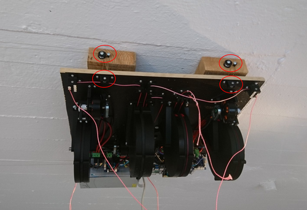

📝Edit on Gitlab
Status Of This Document
This documentation might still have gaping holes here and there.
If you're building a v4, say hi and connect with other builders in the discord channel.
Table of Contents
Sourcing and Preparing Wiring Loom
 Please see the bill of materials (a Google Docs spreadsheet).
Please see the bill of materials (a Google Docs spreadsheet).
Hardware Assembly
In the repo, there's an Openscad file called layout.scad.
Open that file with Openscad.
It shows all the parts, including where and how they're supposed to be mounted.
 This view of the ceiling unit greets you when you open the layout.scad file with Openscad.
Rotate the view (inside Openscad) by clicking and dragging with your mouse.
Zoom by scrolling your scroll wheel.
This view of the ceiling unit greets you when you open the layout.scad file with Openscad.
Rotate the view (inside Openscad) by clicking and dragging with your mouse.
Zoom by scrolling your scroll wheel.
To help positioning parts on the ceiling unit,
2d print out the layout_a4.pdf
and use it as a template.
As for the circuit boards and the power supply, place them out in a configuration similar to this:
 Please click the image to open a larger version.
Works for all images in this manual.
Please click the image to open a larger version.
Works for all images in this manual.
 Please click the image to open a larger version.
Works for all images in this manual.
Please click the image to open a larger version.
Works for all images in this manual.
Hot tips for circuit board placement:
- Use the spacers shipped with the ODrives also for the Duet3.
- The Raspberry Pi uses spacers that are twice as long, which may be 3d printed (see pi_mount stl in the repo).
- Make sure that the Duet3's USB port and SD slot are not covered by a 1XD card.
- Make sure the Pi's HDMI1 port is not covered by the Duet3.
Wiring
See
The Two CAN Busses
The Duet3 has two CAN busses coming out of its RJ11 (6P4C) contact.
These two CAN busses live separately, in two different pairs of wires.
The two centermost conductors in the 6P4C contact carry the main CAN bus.
It transfers step/dir signals from the Duet3 to the 1XDs.
 The main CAN bus goes inside the white wire, from the Duet3 to board 43, to board 42, to board 41, to board 40.
Board 40 should have termination jumpers on. The other 1XD boards should not.
The main CAN bus goes inside the white wire, from the Duet3 to board 43, to board 42, to board 41, to board 40.
Board 40 should have termination jumpers on. The other 1XD boards should not.
 The main CAN bus goes inside the white wire, from the Duet3 to board 43, to board 42, to board 41, to board 40.
Board 40 should have termination jumpers on. The other 1XD boards should not.
The main CAN bus goes inside the white wire, from the Duet3 to board 43, to board 42, to board 41, to board 40.
Board 40 should have termination jumpers on. The other 1XD boards should not.
The rightmost and leftmost pins are not in use in 6P4C contacts.
So we have two remaining conductors that are not used by the main CAN bus.
The two remaining conductors carry the ODrives' CAN bus.
 The jumper wires carry the ODrives' CAN signal from the telephone cable into the ODrive.
The jumper wires carry the ODrives' CAN signal from the telephone cable into the ODrive.
The ODrives' CAN bus also goes inside the white wire, at least on my machine.
It goes from the Duet3, through board 43, branches off into one ODrive, the other branch continues through board 42, through board 41, and ends in the second ODrive (left one on the image below).
With the ODrive CAN bus wired up, make sure you set the termination resistors correctly:
 There are little switches inside the red circles, that flip CAN termination resistors on and off.
There are little switches inside the red circles, that flip CAN termination resistors on and off.
Mounting
This part hasn't changed between HP3 and HP4, so I'm linking to old HP3 documentation for now:
Make sure anchors are rigid. Also, make sure your lines form nice Parallelograms (two pairs of parallel sides).
Optional Hoisting System
Screwing the ceiling unit onto the ceiling can be a bit challenging.
I therefore added a hoisting system to my own HP4.
See it in this tweet and this video.
The little CAD models I used are shared here.

The optional hoisting system. On my own machine I've routed the line back down
to the ceiling unit one more time compared to what I had on this image.
Firmwares and Configuration
Stock RepRapFirmware will work in the future, but for now, I publish the RepRapFirmware I use here:
link.
Stock ODrivefirmware works for us out of the box.
Please look closely at my config files:
Calibrating Anchors and Spool Buildup
This has changed a lot between HP3 and HP4.
A computer vision system called hp-mark has been deveoped to assist, and largely automate, the calibration process.
The system has been built and proved, see this video.
Replicating What's Going On In That Video
Ok, this will be a bit messy.
hp-mark is still very much in beta, and requires the user to be comfortable doing a few things via the Unix terminal.
Our main goal is to be able to run the script called get_auto_calibration_data_automatically.sh.
Build hp-mark (hpm) on your main computer.
See the hp-mark repo,
and in particular the README.md and the doc directory for some guidance.
The get_auto_calibration_data_automatically.sh script expects your camera connected Raspberry to be available
at the ip called rpi in your /etc/hosts file.
It's also assuming your Duet3 connected Raspberry to be called duet3 in your /etc/hosts.
The Raspberry Pi needs the camera to be connected, and it needs ssh to be enabled.
It also needs a version of raspistill that matches your lens, or else your images' colors won't look pretty.
To get the one I use (mathing my Arducam lo-distortion 45 deg lens), do
$ ssh pi@rpi
$ mkdir repos
$ cd repos
$ git clone https://github.com/ArduCAM/NativePiCamera.git
We also have some LED rings around the lens.
Since I didn't have the duet3 Rpi yet while developing hp-mark, I used a separate Raspberry.
To light up the leds, I used GPIO pins o the separate Raspberry that are not available on the duet3 Raspberry.
So the following method for making the LEDs light up won't work if you plan to use only the duet3 Raspberry.
Here's how you get code that lights up the LEDs:
$ ssh pi@rpi
$ mkdir repos
$ cd repos
$ git clone https://gitlab.com/tobben/rpi_ws281x.git
The script also assumes the
Torque_mode macro
has been installed into your macro folder on the Duet3.
With all those things in place, if all the stars align, it should be possible for you to collect the calibration data like this:
$ cd path/to/hp-mark/use
$ ./get_auto_calibration_data_automatically.sh --show result
The --show result option will make hpm stop and show you each measurement when it's done, and wait for you to press
Enter before it continues.
After collecting 18 data points (don't worry if a few we unsuccessful or had a warning), it prints out the data it has collected
in a format that copy/paste friendly for the next script we're going to use: simulation.py.
The output of simulation.py needs to be adjusted by yet another script, called just script.m.
If again, all stars align, you can re-run simulation.py as described inside script.m, and you'll end up with a perfect set of M669 and M666 commands, to copy/paste into your config.g.
For anyone who have reached this far: I salute you.
Reach me via Discord and tell me you need the auto calibration stuff, and I'll up-prioritize automating further and documenting better.
Slicing and Usage
Use any standard slicer you like. Set the correct nozzle size, and configure a circular print bed with the origin in the middle.
A quite high travel speed, like 600 mm/s or higher, should be possible and beneficial if your effector is fairly light.
Be aware that max speeds configured in ReprapFirmware and in the ODrives also limit the max speed.
Before you start a large print, it's recommended to check if your model fits the print volume or not.
This is done with line-collision-detector, a tool that is developed specifically for Hangprinter build volume verification.
Please note that many slicers will auto center the model before slicing it.
line-collision-detector will not do that.
Since you probably want to check if the centered version of your model collides with lines or not, it's recommended to first import your model in the slicer, and then export it from the slicer as an stl, and then run it in the line-collision-detector.
Final Words
Building, mounting, calibrating, and running a HP4 is a big undertaking, and many of the steps are sparsely documented, but you are not alone.
Be sure to check out the resources, there are some quite good ones.
If you spot an error or a missing link in the documentation, then I wholeheartedly recommend that you fix it and contribute the fix back to the repo.
That is how this project is supposed to work.
But also, do come by the Discord and say hi, or have a chat via Gitlab merge request or issue.
Hangprinter wants to make you feel included and empowered, that's why the project exists.
If it doesn't, then something in the project is wrong, and we will fix that together.
- tobben 👷
The raw text source of this manual is published under the GPL-2.0 license, and is being maintained in the hangprinter-org repo. All images and videos are also published under the GPL-2.0, except the wiring diagram, which is published under the GPLv3
license.